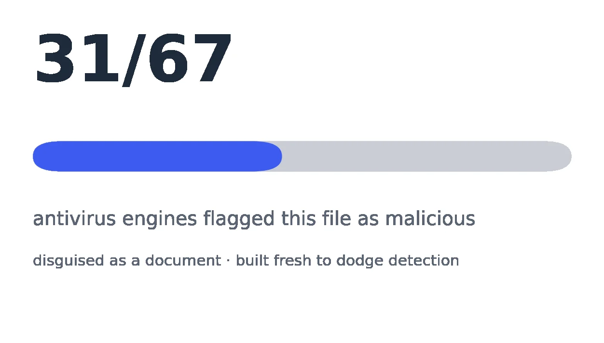
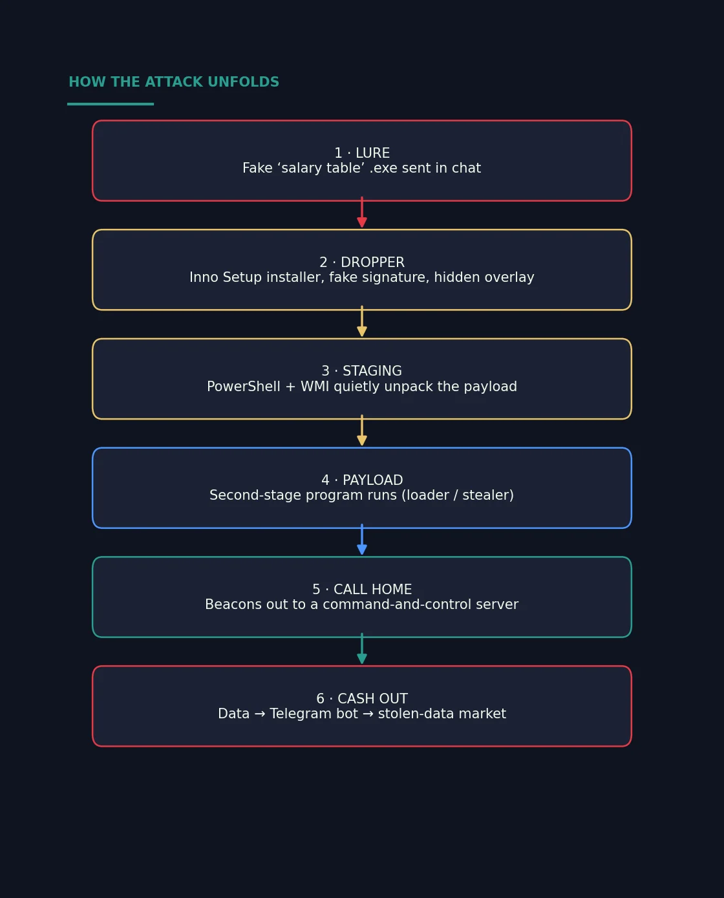
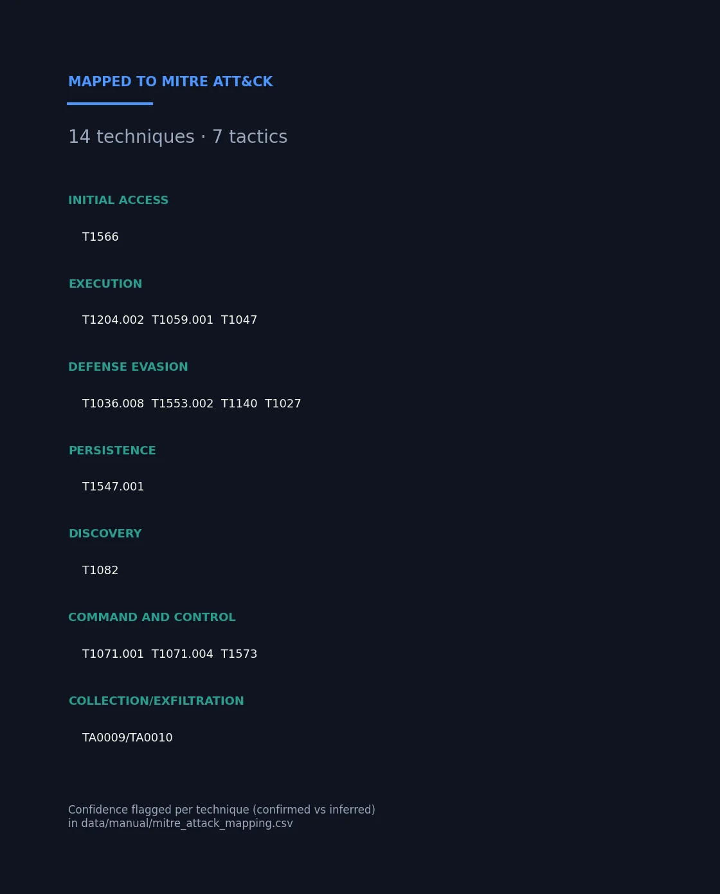
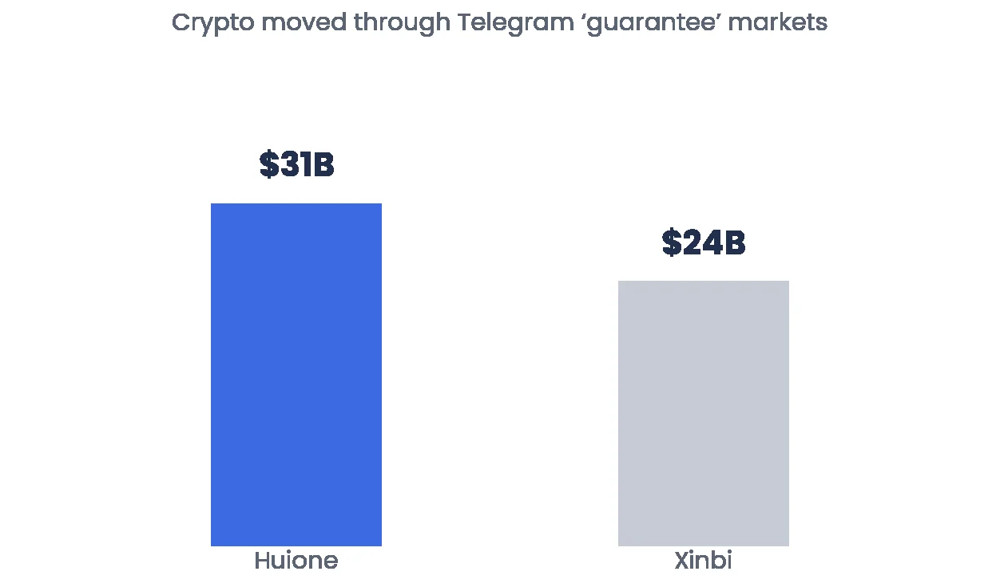
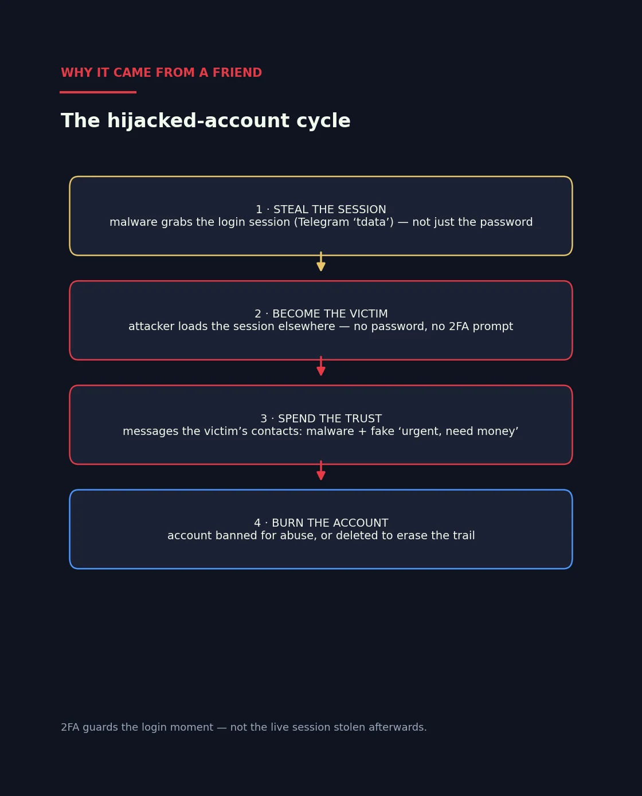

A "salary table" that wasn't
My family got a malware file from a friend's hijacked Telegram account. I traced what it does and who profits, without ever opening it.

How it started
Someone my family knew sent them a file called "salary table" in Khmer, and later a fake "family emergency" message asking for money. Then that person's account disappeared.
Everyone said to delete it. I wanted to know three things: what is it, what do the attackers want, and how did it come from someone we trust?
How I studied it safely
- Never opened it. Running the file is how it infects.
- Made a SHA-256 fingerprint and looked it up on VirusTotal, which checks it against about 70 antivirus engines and sandboxes.
- Described its behaviour from sandbox reports and CISA, ACSC and vendor analyses.
- Mapped each behaviour to MITRE ATT&CK, marked as confirmed or inferred.
- Built the figures in Python so they can be regenerated from the data tables.
What the file is
It was an 8 MB Windows program pretending to be a payroll document. It uses a fake signature to look legitimate, then quietly unpacks a second program with PowerShell and contacts a server the attackers control.


Follow the money
- Malware like this steals passwords, cookies and login sessions, which are sold as "logs" on Telegram from about US$5.
- The money moves through crypto "guarantee" markets. Huione Guarantee reportedly moved over US$31B before the US Treasury (FinCEN) acted against it in May 2025.
- Shutting one down doesn't end it. Others remain, like Xinbi (over US$24B reported).

Why it came from a friend
The malware steals the live login session, not just the password. With that session, the attacker is logged in as the victim and no 2-factor code is asked for.
They message the victim's contacts with more malware and fake "urgent, need money" requests. Then the account is banned or deleted. The file and the emergency message my family got were part of the same cycle.

What I learned
- You can learn a lot about a dangerous file without touching it.
- Keeping "confirmed" and "inferred" apart made the findings much more trustworthy.
- Reported numbers are a floor. The real totals are higher.